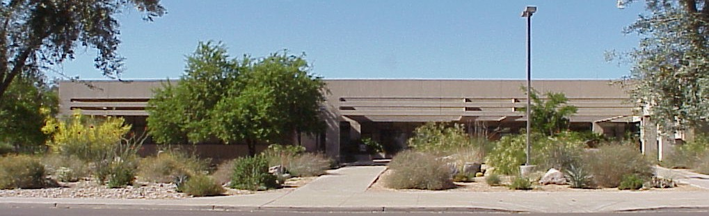

Rick Champlin

Researcher | Software Engineer | Electrical Engineer | IT Manager
Professional Skills:My Online Resume
Education:
University of Arizona
(2022 to Current) Researcher | Software Engineer | Mentor

Currently, I am assigned to the ToMCAT Research Program.
Responsibilities:
- Develop Software
- Create Procedures & Documentation
- Oversee Lab Operations
- Help run the Experiments
- Mentor PhD & Undergrad Students
Achievements:
- Developed, programmed and modified several programs used in the lab. For example:
"Run Experiment", "Say Announcements",
"Lab Recorder", and "Export Redcap Data", just to name a few.
- Solved the "EEG - Start LSL Streaming" problem. I modified configuration files and procedures to resolve the problem.
- Solved the "fNIRS - Aurora Program Crashing" problem.
I worked with "NIRx" the maker of our "fNIRS Boxes" and the "Aurora Program" to troubleshoot and come up with a solution to the problem.
The solution required me to re-design and re-configure the "fNIRS Network" in the lab.
The "Aurora Program" has been working flawlessly ever since.
- Learned every aspect of setting up and running "ToMCAT Experiments".
I have attended, help set up and assisted in running over 50 Pilot & Dry Run Experiments to date.
- A ongoing process, I update the "Experiment Manual & Procedures" documentation.
- I have created a "Network & Wiring Diagram" for the ToMCAT Lab.
- I have supervised and mentored several undergrad students assigned to me.
Itcap Inc.
(1990 to 2021) CIO | IT Manager | Software Engineer

ITCAP Inc. (dba: DRA Software Training and DRA Consulting) went out of business in early 2021, mainly because of the COVID-19 pandemic causing loss of contracts.
Responsibilities:
- VP & CIO of Technology
- IT Manager
- Software Engineer
- Manage Consulting Services
- Design Technical Infrastructure
- Maintain Servers & Domains
Achievements:
- Designed and built Itcap's Technical Infrastructure including: Server Racks, Phone System, Network and Domains.
- Migrated Itcap's Server & Network Infrastructure to a Virtual Infrastructure I designed on AWS.
- Developed and programmed all of Itcap's in house: Databases, Software & Web Apps, and Public Websites.
- Developed Web Apps for Itcap's partners/clients like: Verizon, Boeing, and Nationwide.
- For over 31 years, Managed Itcap's IT Department and Maintained: Servers, Networks & Security, and Domains.
Garrett Airesearch
(now called Honeywell)
(1985 to 1990) Engineer | Staff Technician

Garrett Airesearch Electronic Tucson Division is now called Honeywell.
I worked at the main facility located at the base of the Catalina Mountains in Oro Valley.
I was laid-off in late 1990 due to military cut backs on the project that I was working on at the time, "B2 Stealth Bomber".
Responsibilities:
- Air Data Systems Technician
- Support to Production Technicians
- Liaison between Production & Engineering
- Software & Database Engineer
- Electronic Engineer
- Failure Analysis Engineer
Achievements:
- Contributed to the design of the “Failure Interrogation Detection & Electronic Reporting System (FIDER)" for the "B2 Stealth Bomber".
- Contributed to the “Central Air Data Computer (CADC)" prototype development & test plan for the “B1B Bomber”.
- Contributed design modification to the “Sonobuoy Launch Computer” for the “Sikorsky SH-60 Seahawk”.
- Contributed “bring-up-to-date” design modification to the “Central Air Data Computer (CADC)" for the “AV-8B Harrier II” and the “A-10 Thunderbolt”.
- In 1988, awarded “Suggester of the Year” by the consortium of “Fortune 500 Companies”.
- Provided technical & engineering support to "Production Technicians" for many products.
Programming
Examples of my work:
I am a very experienced programmer and database designer. Over the years, I have developed hundreds of software programs and designed many databases.
I have extensive experience with multiple software languages like Transact-SQL, VB & VB Script, C++, Java & Java Script, HTML & CSS, Python, Bash Script, and Uber Script, just to name a few.
And, I have designed many Databases, a lot of them are still in operation. Below is a few examples of real programs and database designs that I have developed, most still being used today.
Confidential and Security Sensitive content has been Redacted from the examples.
Just click on link to see an example of my work:
(Note: The code window is scrollable, just hold your mouse over the window.)
Bash Script
Export RedCAP Data to Experiment Data Directories:
This is a program that I developed for the UA ToMCAT Research Program.
It exports data from one of ToMCAT's Databases, turns the data into "csv" files and place the files in the specified Experiment Directory on our lab Server.
Bash Script
Verbally make Announcements into Participant’s Earbuds and on Server:
This is a program that I developed for the UA ToMCAT Research Program.
It plays pre-set and typed-in announcements into the participant's earbuds during an experiment. And, it tracks what announcements have been played.
If the server (Tom) is enabled, it will also play the selected announcement on the server's speakers in the control room so that the operator can hear what the participants are hearing.
Python
API Interface to the UA ReDCAP Database:
This is a Python program that I developed to make API Calls and Query Request to the ReDCAP Database for the UA ToMCAT Research Program. It exports data from one of ToMCAT's Databases, turns the data into "csv" files and place the files in the specified Experiment Directory on our lab Server.
Network Diagram
Lab Network and Wiring Diagram:

This is a Diagram of the Network and Wiring schematic I designed for the UA ToMCAT Research Program Lab.
University of Arizona
Electrical & Computer Engineering:

Bachelor of Science in Electrical & Computer Engineering (B.S.E.E.) - 1985
- Electrical Theory
- Electronic Design
- Computer Science
- Software Design
- Computer Programming
- Physics
- Calculus
- Minor in Broadcasting
One of my most rememberable instructors was Prof. John Thiess, E.E.
He was a great professor, mentor, and friend to me. He taught me how to be a great engineer.
Special Projects HS
(now called University HS)
Associate Electrical Engineer Technology (A.E.E.T.) - 1979
- AP Electronics & Engineering
- AP Computer Science
- AP Programming
- AP Physics & Mathematics
- Pres. of the Electronics Club
- Pres. of the Computer Club
Rememberable instructors:
- Jim Madden (Physics, Computer Science & Computer Club Advisor).
- Dale Finfrock (Electronics & Electronics Club Advisor).
Achievements:
- 1978 Awarded 2nd Place in Industrial Electronics Competition for Arizona.
- 1979 Awarded 1st Place in Industrial Electronics Competition for Arizona.
Went on to represent Arizona at Nationals and took 2nd Place at Nationals.
- Developed & programmed a "Student Matching" software program
that ran at 5 different High Schools in Tucson and involved over 800 students.
⤒
About

Rick ChamplinMy Online Resume
Born and raised in Tucson, AZ (true Tucsonan) Married with 2 boys.
Hobbies and Interest:
Designing & building electronic circuits and programming them has always been my main hobby.
Even as a young teenage (way before the internet and before the PC), I learned to program on a breadboard computer I had built,
TRS 80s, SIMs and the School District’s DEC PDP11 Mainframe.
I studied and received my Technician’s Amateur Radio License when I was about 15 years old and my 2nd Class FCC Commercial License at about 17 years old.
Now days, I love spending time with my family, hiking, bicycling and going on trips together (I still enjoy working on electronic projects around the house).
Early in my Career:
I have been an Electronic Technician, Electronic Engineer or Software Engineer my entire working career.
Even as a teenager in High School, my first real job was as an Electronic Technician in the Stage Department for the Tucson Community Center.
While most of my friends were working in fast food restaurants or as babysitters as their first jobs,
I was trouble shooting and repairing audio & sound equipment for the TCC and the City of Tucson.
High School:
At Rincon HS, I was very involved in my Electronics, Mathematics and Science Classes.
I became the teachers assistant in the Electronics Class and ran the technical part of the school's radio station.
My junior and senior years, because I was accelerated in electronics and math, my parents enrolled me in a program called
"Special Projects HS (now called University HS)".
At Special Projects, I was able to take AP Electronics, AP Physics and AP Mathematics classes.
Also, I was the Electronics Club President and the Computer Club President.
As a fundraiser for the Electronics Club, I developed and programmed a "Student Matching" software program that ran on the
School District’s DEC PDP11 Mainframe and involved over 800 students at 5 different High Schools in Tucson.
Graduating from Special Projects gave me the equivalents of an Associates Degree in Electrical Engineering (A.S.E.E.).
Collage:
University of Arizona, Collage of Electrical Engineering (E.E.).
At the University of Arizona, my major was Electrical Engineering and minored in Computer Science, Speech Communication and, Broadcasting.
I took all the required classes to receive my Bachelors of Science in Electrical Engineering (B.S.E.E.).
My favorite professor was Prof. John Thiess, E.E.
He became a good friend to me and mentored me inside & outside the classroom. He was a great professor & engineer and taught me how to be a great engineer too.
In collage, two of my best friends and I formed a partnership/company to develop a single board Application Computer compatible with the IBM PC software.
We successfully designed, built and programmed two prototypes.
However, we did not go into production with our product mainly because the market had gotten so flooded with similar products,
it would have been hard for our "start up" company to compete.
My job at Garrett Airesearch (now called Honeywell):
I started at "Garrett Airesearch Electronics Division - Tucson" right out of collage.
I first worked at the facility located on Elvira street close to the airport. Later, after the new located at the base of the Catalina Mountains in Oro Valley was built,
I was transfered to that location.
I was hired in as an "Electronics Production Technician" on the "Air Data Systems" production lines.
Very quickly, because of my technical & troubleshooting skills and, my engineering knowledge,
I was promoted to "Staff Technician". In this position,
my responsibilities was to provide technical support to Production Technicians and be a liaison between Production & Engineering.
I had very interesting programs & products that contributed design and modification to. Here are a few of them: "Sonobuoy Launch Computer" for the "Sikorsky SH-60 Seahawk",
"Central Air Data Computer (CADC)" for the “AV-8B Harrier II”, the “A-10 Thunderbolt" and the “B1B Bomber".
After being promoted to Engineering, I was assigned to develop a "Failure Analysis Database & Application".
This application tracked, recorded and analyzed failures on returned products for repair.
Later, I was assigned to contribute software design to the "Failure Interrogation Detection & Electronic Reporting System (FIDER)" for the "B2 Stealth Bomber".
In 1988, I was awarded “Suggester of the Year” by the consortium of “Fortune 500 Companies”.
In late 1990, I was laid off from Garrett Airesearch as a result of budget cut backs on the "B2 Stealth Bomber" project by the Pentagon.
My job at ITCAP Inc:
I worked at ITCAP Inc, for over 30 years.
My position was VP of Information Technology, CIO and Director of Software Development.
In those 30 years,
I have designed developed and programmed hundreds of applications & databases for both in house use and other companies/entities.
Pretty much all of ITCAP’s applications, systems and databases, I designed and developed over the years.
I was contracted to designed, developed and program applications for over 50 different companies & clients (ITCAP dba DRA Consulting).
A lot of those applications are still in use today.
ITCAP Inc. (dba: "DRA Software Training" and "DRA Consulting") went out of business in early 2021,
mainly because of the COVID-19 pandemic causing loss of contracts.
My job at University of Arizona:
Currently, I work for the University of Arizona as a Researcher & Software Engineer.
I am assigned to the ToMCAT Research Program.
I love my job at UA. The students, faculty and staff I work with are great. My bosses, "Adarsh Pyarelal, PhD" and "Prof. Kobus Barnard" are wonderful to work for.
The ToMCAT Research Program
that I work on is extremely interesting and I am always learning new things.
I spend most of my time working in the lab where we run the experiments for the program.
I have developed several software programs, documents and procedures used in the lab and during the experiments.
Even though I love being on the UA campus, when I am not in the lab, I am working from my home office on the software & documents I develop for the program.
My Career Summary:
I am a very experienced software, database and application developer & engineer.
I am a hard worker and, as my record shows, always very dedicated to my job and assigned tasks.
All my life, I have been a good self learner.
I learn new things very quickly and have always been a good team player.
Contact
If you want my full contact info, please send me a message here,
and I will reply with my info.
Thank you!
Rick Champlin has received your message: